Una puerta lógica es un dispositivo que aplica una función lógica sobre una o más señales de entrada, para obtener una señal de salida.
Una puerta lógica puede ser un dispositivo eléctrico, hidráulico, mecánico, etc, siempre que se asigne la magnitud correspondiente (o la ausencia de ella) a los dos valores lógicos 1 y 0 utilizados en el álgebra de Boole. Nosotros nos centraremos en las puertas lógicas electrónicas.
Las puertas lógicas electrónicas se fabrican utilizando diodos y transistores a modo de interruptores. Las tecnologías que han ido utilizándose para fabricar puertas lógicas electrónicas son:
- RTL (Resistor-Transistor Logic). Fueron las primeras en utilizarse en circuitos integrados y se fabricaban con transistores bipolares y resistencias.
- DTL (Diode-Transistor Logic). Se sustituyeron las resistencias de las RTL por diodos, consiguiéndose así mayor integración (menor tamaño) y mayores velocidades de respuesta.
- TTL (Transistor-Transistor Logic). Sustituyendo los diodos por transistores se consiguió un nivel de integración aún mayor. Esta tecnología sustituyó a la DTL y aún se usa hoy en día en muchas aplicaciones, aunque no es ya la más usada.
- CMOS (Complementary Metal–Oxide–Semiconductor). Es la tecnología más usada hoy en día y utiliza transistores de efecto de campo en vez de bipolares, lo que permite un menor consumo, mayores integraciones y mayores velocidades de operación.
Las puertas lógicas se fabrican de manera que se pueden combinar entre sí y utilizar las salidas de algunas como entradas de otras. Esto permite implementar cualquier función lógica que se nos pueda ocurrir usando puertas lógicas muy simples. En teoría, solo necesitaríamos una puerta para hacer cada una de las operaciones booleanas básicas: la unión (producto lógico) (Y), la disyunción (suma lógica) (O) y la negación (NO).
En la práctica, se fabrican también otras puertas lógicas que realizan algunas funciones lógicas compuestas por varias operaciones, porque resulta más sencillo fabricarlas así con las lógicas TTL y CMOS. Además, normalmente no se fabrican puertas lógicas discretas, sino que se fabrican circuitos integrados que contienen múltiples puertas en su interior accesibles a través de diferentes terminales.
Estudio de las puertas lógicas
Tipos de puertas lógicas
Ya hemos visto que, en realidad, cualquier función lógica se podría construir con tres puertas lógicas, correspondientes a las operaciones lógicas básicas (suma, producto y negación). Sin embargo, en la práctica existen 8 puertas lógicas diferentes, que son las siguientes:
- Puerta IF (si) o buffer: es una puerta cuya salida es la misma que la entrada. En los circuitos se utiliza como amplificador o para adaptar impedancias y permitir conectar otros dispositivos. Como no implica ninguna operación lógica, no la vamos a estudiar.
- Puertas lógicas básicas: son las correspondientes a las operaciones lógicas básicas. Se llaman NOT (para la negación), AND (para el producto lógico) y OR (para la suma lógica)
- Puertas lógicas universales: se llaman así porque permiten construir cualquier función lógica que se nos ocurra utilizando únicamente un tipo de puerta. Son las puertas NAND (producto negado) y NOR (suma negada).
- Puertas lógicas exclusivas: se utilizan para saber si las entradas son iguales o no. Combinando varias, se pueden hacer detectores de paridad. Se usan mucho en procesamiento de señales. Son las puertas XOR (suma exclusiva) y XNOR (suma exclusiva negada)
Veremos a continuación con detalle cada una de estas puertas. Para cada una de ellas veremos la siguiente información:
- Función lógica que representan: tanto su expresión algebraica como su tabla de verdad
- Símbolo: estudiaremos dos tipos de símbolos:
- ANSI (americano o "militar"): son los símbolos tradicionales y tienen formas diversas, por lo que se distinguen muy bien unos de otros. Son los que usaremos siempre que diseñemos circuitos con puertas lógicas.
- IEC (europeo): son símbolos internacionales, aunque son todos rectangulares y son más fáciles de confundir. Tenían sentido en los 90 (cuando surgieron) porque eran mucho más fáciles de tratar por los ordenadores e impresoras de la época, pero ahora no tienen esa ventaja. Los estudiamos porque son oficiales y te los podrás encontrar en muchos sitios, por lo que debes conocerlos, pero no los usaremos en general para diseñar circuitos.
- Circuitos integrados comerciales donde es posible encontrarlas.
Simulador de puertas lógicas
Elige una puerta en la fila de miniaturas, cambia el símbolo entre ANSI e IEC y conmuta las entradas A y B con los interruptores: la salida S se enciende o se apaga y la fila activa de la tabla de verdad se resalta.
Úsalo para comprobar la función lógica de cada puerta mientras lees su ficha, y para repasar los dos símbolos antes de dibujar circuitos.
Puertas lógicas básicas
Puerta NOT
También se conoce como inversor. Sólo tiene una entrada. Su salida es 1 si la entrada es 0.
\[S = \overline{A}\]
Puerta AND
Realiza el producto lógico de sus entradas. Puede tener dos o más entradas. Su salida es 1 solamente si todas las entradas valen 1.
\[S = A\cdot B\]
Puerta OR
Realiza la suma lógica de sus entradas. Puede tener dos o más entradas. Su salida es 1 cuando al menos una de sus entradas vale 1.
\[S = A+ B\]
Puertas lógicas universales
Puerta NAND
Realiza el producto lógico de sus entradas y luego invierte la salida. Es equivalente a una puerta AND con una puerta NOT a la salida. Puede tener dos o más entradas. Su salida siempre es 1 salvo si todas las entradas valen 1, en cuyo caso la salida es 0.
\[S = \overline{A\cdot B}\]
Puerta NOR
Realiza la suma lógica de sus entradas y luego invierte la salida. Es equivalente a una puerta OR con una puerta NOT a la salida. Puede tener dos o más entradas. Su salida solo es 1 cuando todas sus entradas valen 0.
\[S = \overline{A+ B}\]
Puertas lógicas exclusivas
Puerta XOR
Realiza una operación de disyunción exclusiva (o desigualdad material) con sus entradas. Esta operación se indica con el símbolo ⊕, que recuerda al símbolo de la suma porque es una operación relacionada con ella. Su salida es 1 cuando sus dos entradas son diferentes y 0 cuando son iguales.
Esta puerta solo tiene dos entradas. Si se quieren combinar varias señales con XOR, se realizan las operaciones dos a dos, tomando la salida de una puerta como una de las entradas de la siguiente. En ese caso, la salida final será 1 si el número de entradas a 1 es impar y 0 si el número de entradas a 1 es par.
\[S = A\oplus B\]
Si te fijas en su tabla de verdad (compruébala en el simulador), podemos sacar la primera forma canónica de la función para tener la expresión algebraica de la operación XOR, que puede expresarse con las tres operaciones básicas del álgebra de Boole:
\[\begin{matrix}S = A\oplus B =\\= A\cdot \overline{B}+\overline{A}\cdot B\end{matrix}\]
Puerta XNOR
Realiza una operación de disyunción exclusiva (o desigualdad material) con sus entradas y luego invierte la salida. Su salida es 0 cuando sus dos entradas son diferentes y 1 cuando son iguales, por lo que detecta la igualdad de las entradas.
Esta puerta solo tiene dos entradas. Si se quieren combinar varias señales con XNOR, se realizan las operaciones dos a dos, tomando la salida de una puerta como una de las entradas de la siguiente. En ese caso, la salida final será 1 si el número de entradas a 1 es par y 0 si el número de entradas a 1 es impar.
\[S = \overline{A\oplus B}\]
Si te fijas en su tabla de verdad (compruébala en el simulador), podemos sacar la primera forma canónica de la función para tener la expresión algebraica de la operación XNOR, que puede expresarse con las tres operaciones básicas del álgebra de Boole:
\[\begin{matrix}S = \overline{A\oplus B} =\\= \overline{A}\cdot \overline{B}+A\cdot B\end{matrix}\]
Circuitos integrados comerciales
Las puertas lógicas se compran dentro de circuitos integrados (chips) que agrupan varias puertas iguales. Las dos familias clásicas son la TTL (serie 74xx) y la CMOS (serie 40xx). En todos los de la tabla, 2 pines se utilizan para la alimentación/referencia y el resto son las entradas y salidas de las puertas (el 4049 tiene 16 pines, 2 de ellos sin conexión).
| Puerta | Puertas por chip | TTL | CMOS | Pines |
|---|---|---|---|---|
| NOT | 6 | 7404 | 4049 | 14 · 16 |
| AND | 4 | 7408 | 4081 | 14 |
| OR | 4 | 7432 | 4071 | 14 |
| NAND | 4 | 7400 | 4011 | 14 |
| NOR | 4 | 7402 | 4001 | 14 |
| XOR | 4 | 7486 | 4070 | 14 |
| XNOR | 4 | 74266 | 4077 | 14 |
El chip de puertas NOT se llama inversor séxtuple (hex inverter) porque contiene seis inversores. Como ejemplo de cómo se reparten los pines, aquí tienes el esquema del circuito integrado CMOS 4081, con cuatro puertas AND de dos entradas: dos pines son la alimentación y los otros doce, las entradas (2) y la salida (1) de cada una de las cuatro puertas.
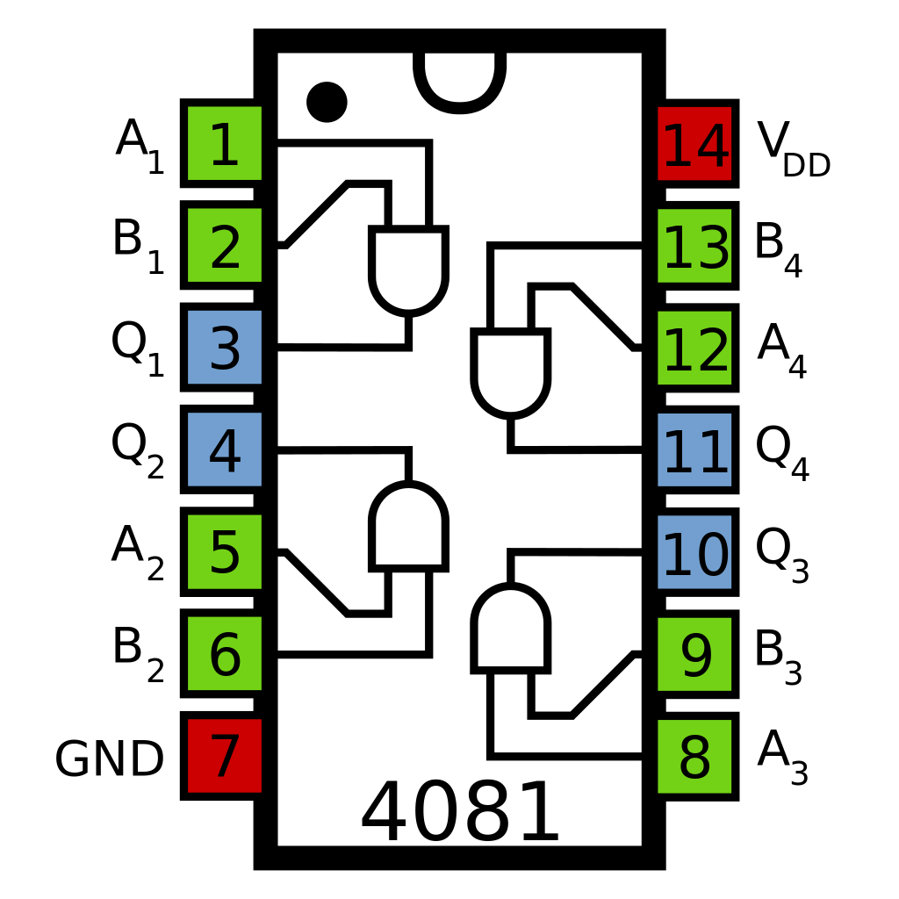
Cuadro-resumen de las puertas lógicas principales
| PUERTA | OPERACIÓN | SÍMBOLO ANSI | SÍMBOLO IEC | TABLA DE VERDAD | |||||||||||||||
|---|---|---|---|---|---|---|---|---|---|---|---|---|---|---|---|---|---|---|---|
| NOT | S = A |
|
|||||||||||||||||
| AND | S = A · B | 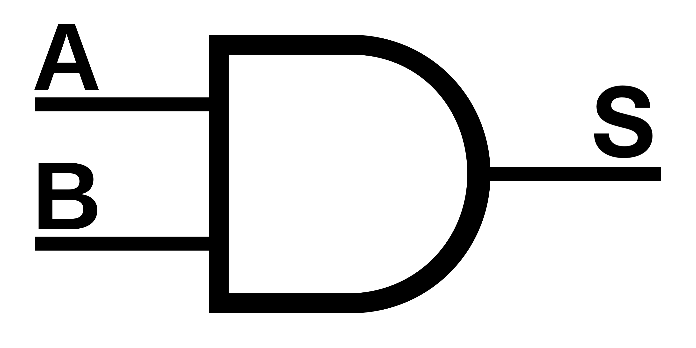 |
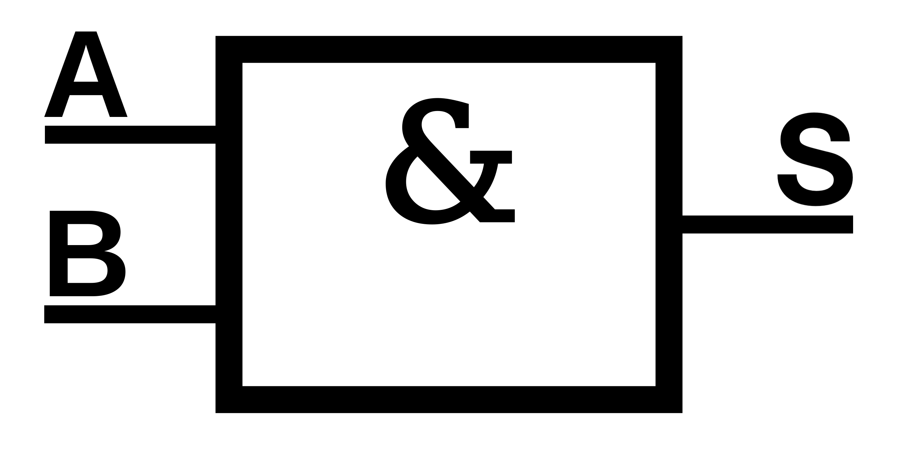 |
|
|||||||||||||||
| OR | S = A + B | 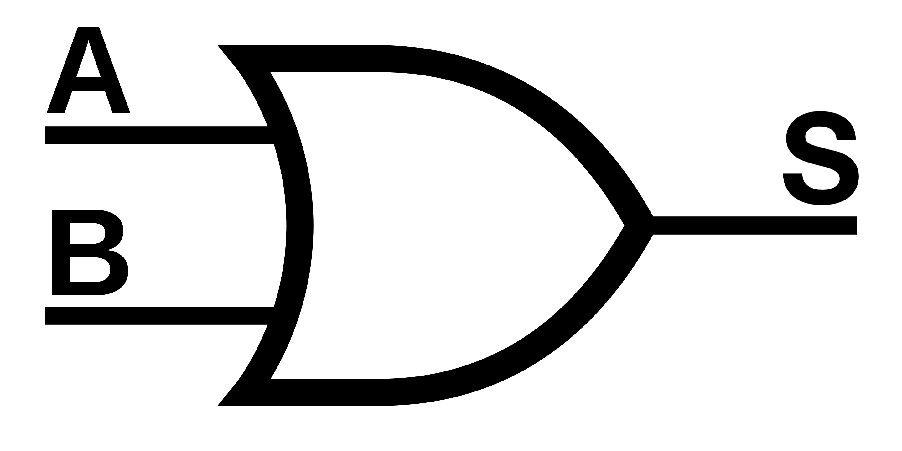 |
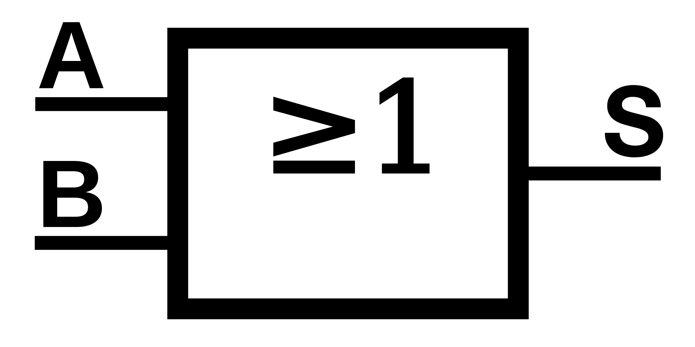 |
|
|||||||||||||||
| NAND | S = A · B | 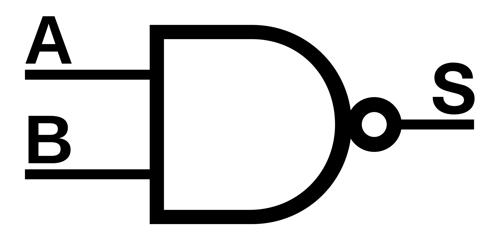 |
|
||||||||||||||||
| NOR | S = A + B | 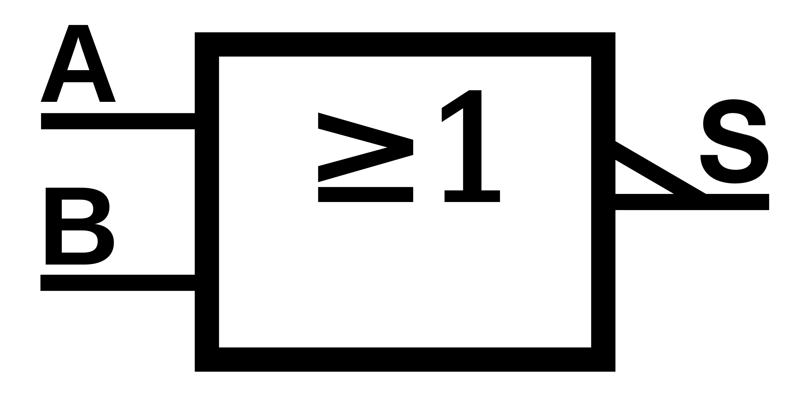 |
|
||||||||||||||||
| XOR | S = A ⊕ B = A · B + A · B | 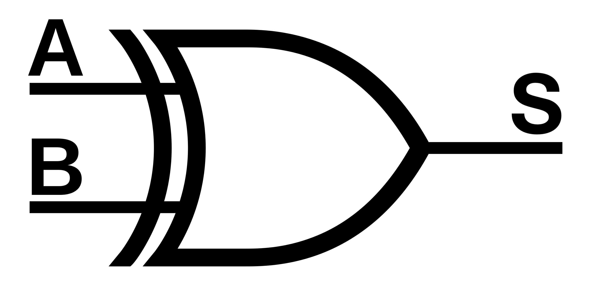 |
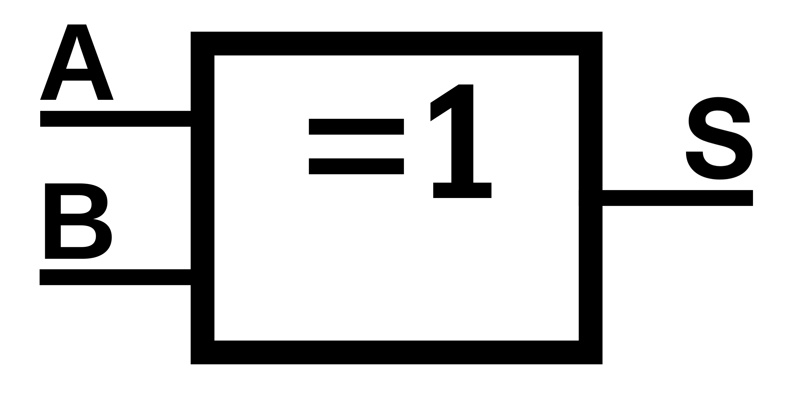 |
|
|||||||||||||||
| XNOR |
S = A ⊕ B = A · B + A · B |
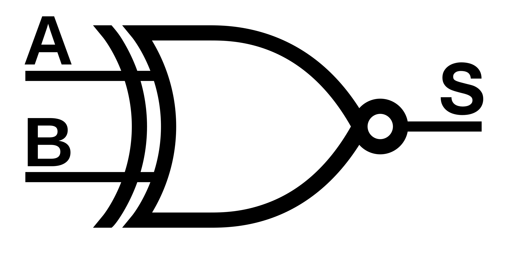 |
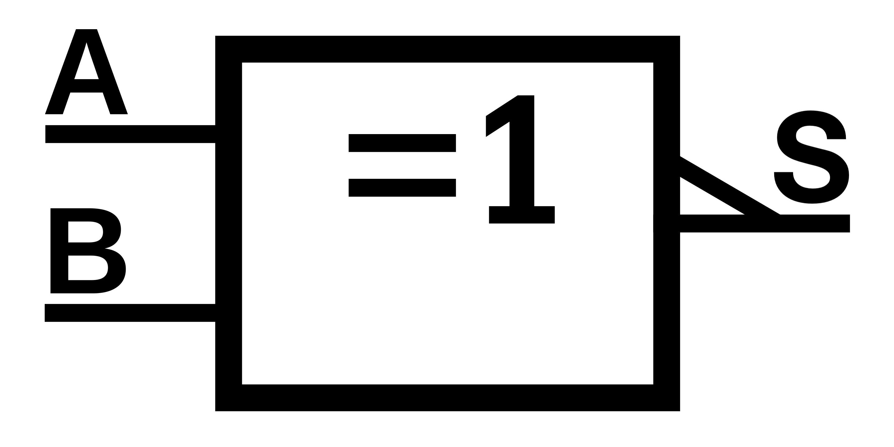 |
|
Lógica NAND
La lógica NAND hace referencia al hecho de que, debido a que la función NAND tiene una funcionalidad completa, todos los sistemas lógicos se pueden diseñar utilizando únicamente puertas NAND.
En efecto, podemos construir las tres operaciones lógicas básicas (NOT, AND y OR) solo con puertas NAND. Por lo tanto, cualquier función lógica (que es siempre una combinación de NOT, AND y OR) se puede implementar utilizando solo puertas NAND.
Vamos a ver aquí cómo podemos construir las puertas lógicas básicas solo con puertas NAND:
Puerta NOT
Queremos obtener la función lógica S = A. Si utilizamos la ley de idempotencia del producto (A = A · A), podemos decir que S = A = A · A, por lo que la operación lógica NOT es igual que el NAND de una señal consigo misma.
La puerta NOT, por tanto, se puede implementar simplemente metiendo la señal que queremos negar por las dos entradas de una puerta NAND:
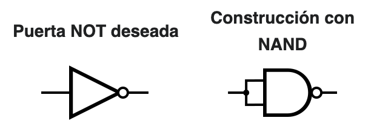
Puerta AND
En esta ocasión, queremos obtener la función S = A · B. Ahora podemos aplicar la ley de la involución (A = A), por lo que podemos decir que S = A · B = A · B , es decir, que la operación lógica AND equivale a hacer un NAND y después invertirlo.
Así, podemos hacer una puerta AND usando simplemente una NAND y negando su salida metiéndola en ambas entradas de otra NAND como hemos visto en el anterior caso:
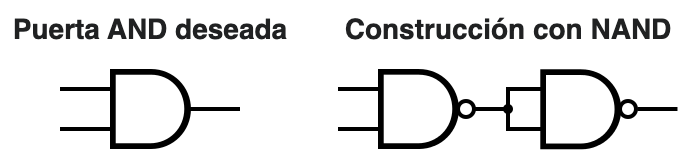
Puerta OR
Ahora hay que lograr la función lógica S = A + B. En esta ocasión tenemos que cambiar el operador suma por el producto (para usar puertas NAND), por lo que aplicaremos la ley de Morgan para el producto (A · B = A + B) pero a las señales previamente negadas: así conseguiremos obtener la suma de las señales A y B y no de sus negadas.
Por lo tanto, podemos implementar la puerta OR negando las señales por separado (como ya sabemos hacer con puertas NAND) y luego haciendo el NAND de esas señales negadas:
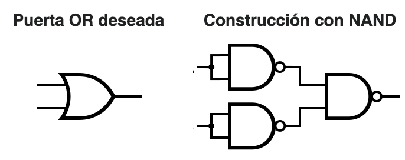
En general, siempre podremos manipular algebraicamente la expresión de cualquier función lógica para dejarla sola con operaciones NAND pero puede llegar a ser muy complicado. Puede ser más sencillo implementar las operaciones de la función con estas puertas equivalentes y simplificar luego el circuito (por ejemplo, si se quedan dos inversiones seguidas que dejarían la señal como estaba).
Vemos un ejemplo resuelto de cómo se haría de las dos formas:
Ejemplo resuelto
implementar la función lógica \(S = A\cdot B+\overline{C}\) empleando únicamente puertas NAND
1ª forma: manipulamos la expresión booleana para expresarla mediante operaciones NAND.
Para cambiar la suma por un producto, necesitaremos aplicar la ley de Morgan de la suma. Para hacerlo, primero vamos a aplicar una doble negación, que no afecta para nada a la función:
\[S = A\cdot B+\overline{C}=\overline{\overline{A\cdot B+\overline{C}}}\]
Ahora aplicamos la ley de Morgan de la suma:
\[\begin{matrix}S = A\cdot B+\overline{C}=\overline{\overline{A\cdot B+\overline{C}}}=\\=\overline{\overline{A\cdot B}\cdot C}\end{matrix}\]
Ahora tenemos la expresión formada únicamente por puertas NAND. Primero se realiza el NAND de A y B, obteniéndose el término A·B, y luego se hace el NAND de ese término con la señal C, obteniendo la expresión final de la función lógica. Por lo tanto, el circuito con puertas NAND será:
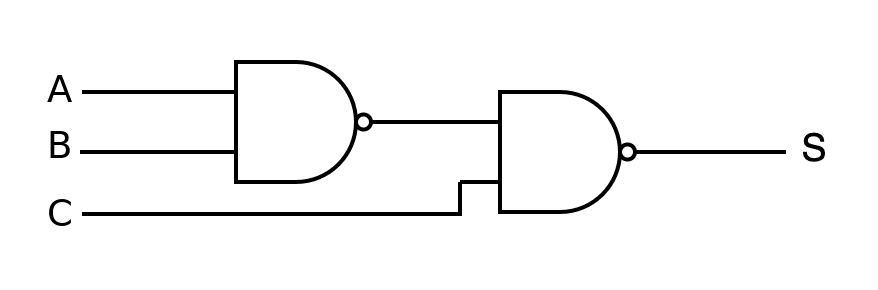
2ª forma: diseñamos el circuito con las puertas lógicas básicas (AND, OR, NOT) y las sustituimos luego por sus equivalentes con puertas NAND.El circuito con puertas básicas sería:
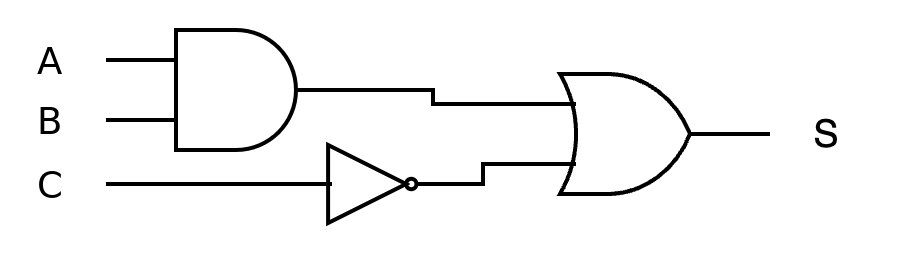
Sustituimos cada puerta por su equivalente con puertas NAND: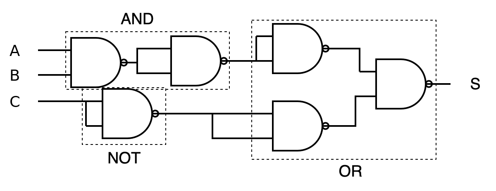
Vemos que quedan algunas parejas de puertas equivalentes a NOT seguidas, que negarían dos veces consecutivas la señal, dejándola igual. Pueden, por lo tanto, eliminarse del diseño y no afectará en nada:
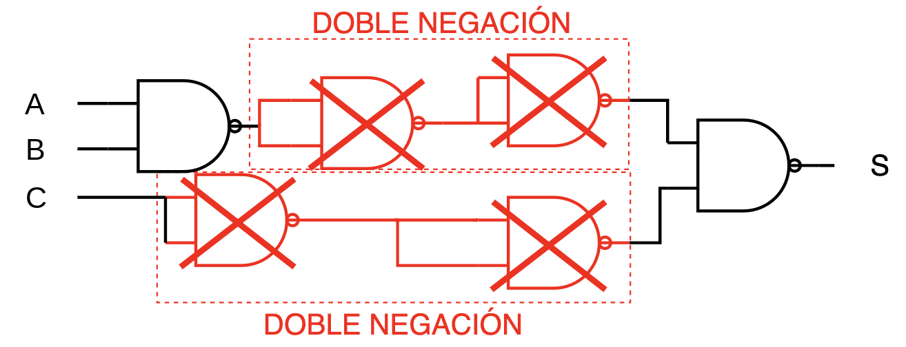
Por lo que nos queda exactamente el mismo circuito que diseñamos de la primera forma (como no podía ser de otra manera):
Lógica NOR
Al igual que ocurre con la función NAND, la función NOR también tiene una funcionalidad completa, por lo que todos los sistemas lógicos se pueden diseñar utilizando únicamente puertas NOR.
En efecto, podemos construir las tres operaciones lógicas básicas (NOT, AND y OR) solo con puertas NOR. Por lo tanto, cualquier función lógica (que es siempre una combinación de NOT, AND y OR) se puede implementar utilizando solo puertas NOR.
Vamos a ver aquí cómo podemos construir las puertas lógicas básicas solo con puertas NOR:
Puerta NOT
Queremos obtener la función lógica S = A. Si utilizamos la ley de idempotencia de la suma (A = A + A), podemos decir que S = A = A + A, por lo que la operación lógica NOT es igual que el NOR de una señal consigo misma.
La puerta NOT, por tanto, se puede implementar simplemente metiendo la señal que queremos negar por las dos entradas de una puerta NOR:
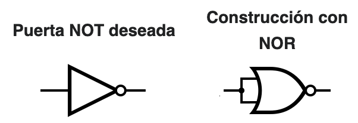
Puerta AND
Ahora hay que lograr la función lógica S = A · B. En esta ocasión tenemos que cambiar el operador producto por la suma (para usar puertas NOR), por lo que aplicaremos la ley de Morgan para la suma (A + B = A · B) pero a las señales previamente negadas: así conseguiremos obtener el producto de las señales A y B y no de sus negadas.
Por lo tanto, podemos implementar la puerta AND negando las señales por separado (como ya sabemos hacer con puertas NOR) y luego haciendo el NOR de esas señales negadas:
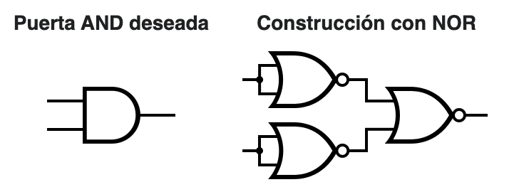
Puerta OR
En esta ocasión, queremos obtener la función S = A + B. Ahora podemos aplicar la ley de la involución (A = A), por lo que podemos decir que S = A + B = A + B , es decir, que la operación lógica OR equivale a hacer un NOR y después invertirlo.
Así, podemos hacer una puerta OR usando simplemente una NOR y negando su salida metiéndola en ambas entradas de otra NOR como hemos visto en el anterior caso:
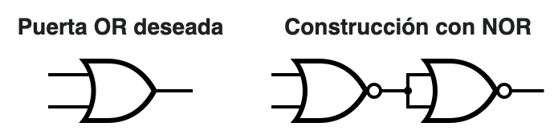
En general, siempre podremos manipular algebraicamente la expresión de cualquier función lógica para dejarla sola con operaciones NOR pero puede llegar a ser muy complicado. Puede ser más sencillo implementar las operaciones de la función con estas puertas equivalentes y simplificar luego el circuito (por ejemplo, si se quedan dos inversiones seguidas que dejarían la señal como estaba).
Vemos un ejemplo resuelto de cómo se haría de las dos formas:
Ejemplo resuelto
implementar la función lógica \(S = A\cdot B+\overline{C}\) empleando únicamente puertas NOR
1ª forma: manipulamos la expresión booleana para expresarla mediante operaciones NOR.
Para cambiar el producto por una suma, necesitaremos aplicar la ley de Morgan del producto. Para hacerlo, primero vamos a aplicar una doble negación, que no afecta para nada a la función:
\[S = A\cdot B+\overline{C}=\overline{\overline{A\cdot B}}+\overline{C}\]
Ahora aplicamos la ley de Morgan del producto:
\[\begin{matrix}S = A\cdot B+\overline{C}=\overline{\overline{A\cdot B}}+\overline{C}=\\=\overline{\overline{A}+\overline{B}}+\overline{C}\end{matrix}\]
Por último, negamos de nuevo dos veces la expresión:
\[S = \overline{\overline{A}+\overline{B}}+\overline{C}=\overline{\overline{\overline{\overline{A}+\overline{B}}+\overline{C}}}\]
Ahora tenemos la expresión formada únicamente por puertas NOR, aunque es bastante más compleja que la que obtuvimos con puertas NAND. Primero hay que obtener las señales A, B y C negadas, lo que hacemos simplemente metiéndolas en ambas entradas de una puerta NOR. A continuación, se realiza el NOR de A y B, y luego se hace el NOR de esa señal con la señal C. Para obtener la expresión final de la función lógica, hay que negar la señal una vez más, con una última puerta NOR. Por lo tanto, el circuito con puertas NOR será:
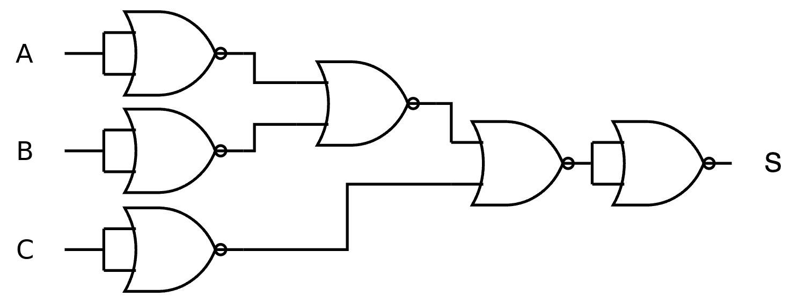
2ª forma: diseñamos el circuito con las puertas lógicas básicas (AND, OR, NOT) y las sustituimos luego por sus equivalentes con puertas NOR.El circuito con puertas básicas sería:
Sustituimos cada puerta por su equivalente con puertas NOR:
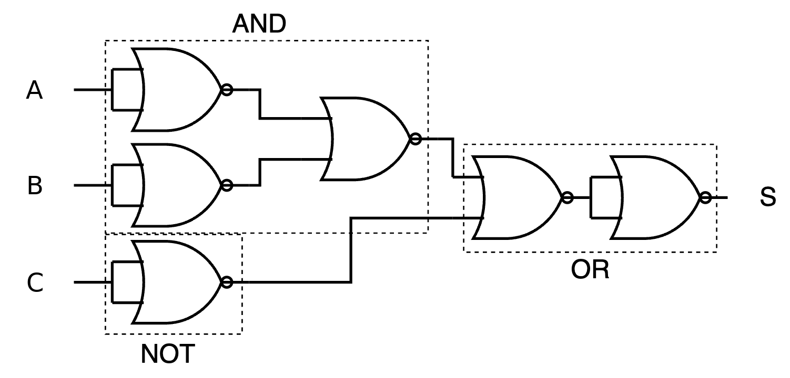
Ahora no podemos simplificar nada, por lo que el circuito quedaría tal cual. Podemos comprobar que es exactamente el mismo circuito que diseñamos de la primera forma, como esperábamos.